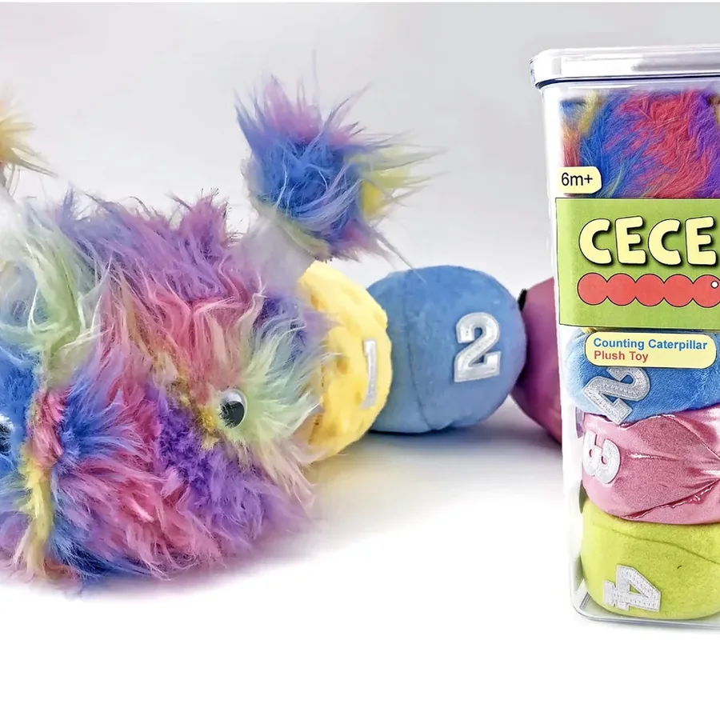
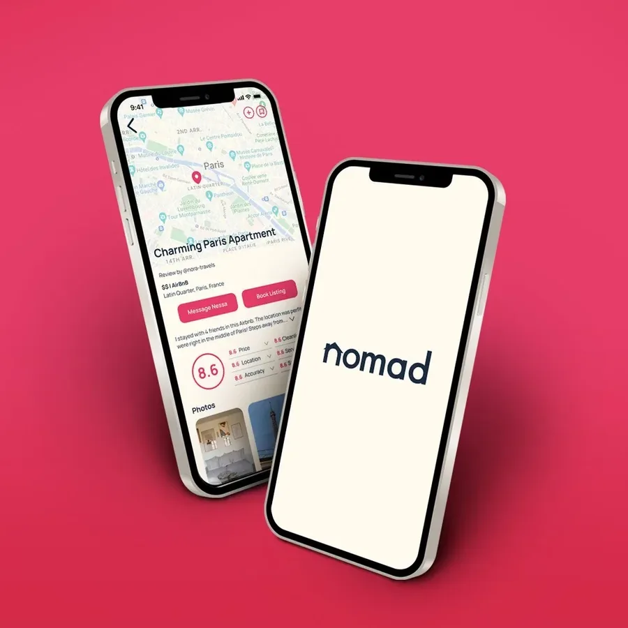
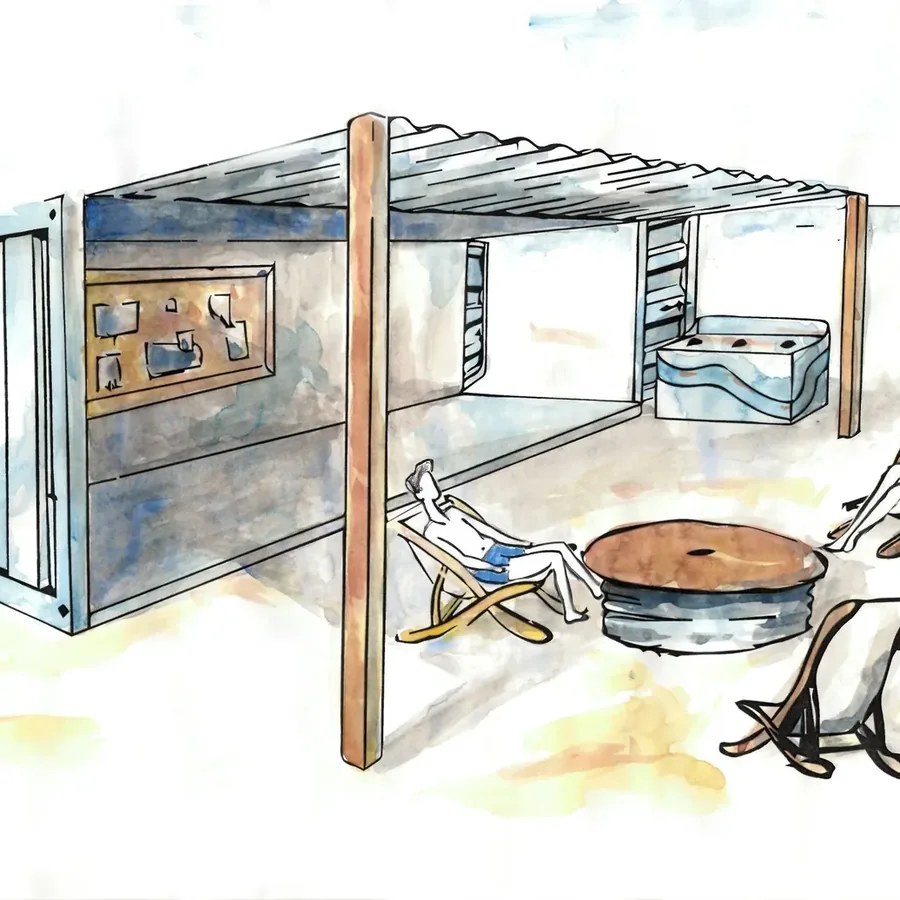
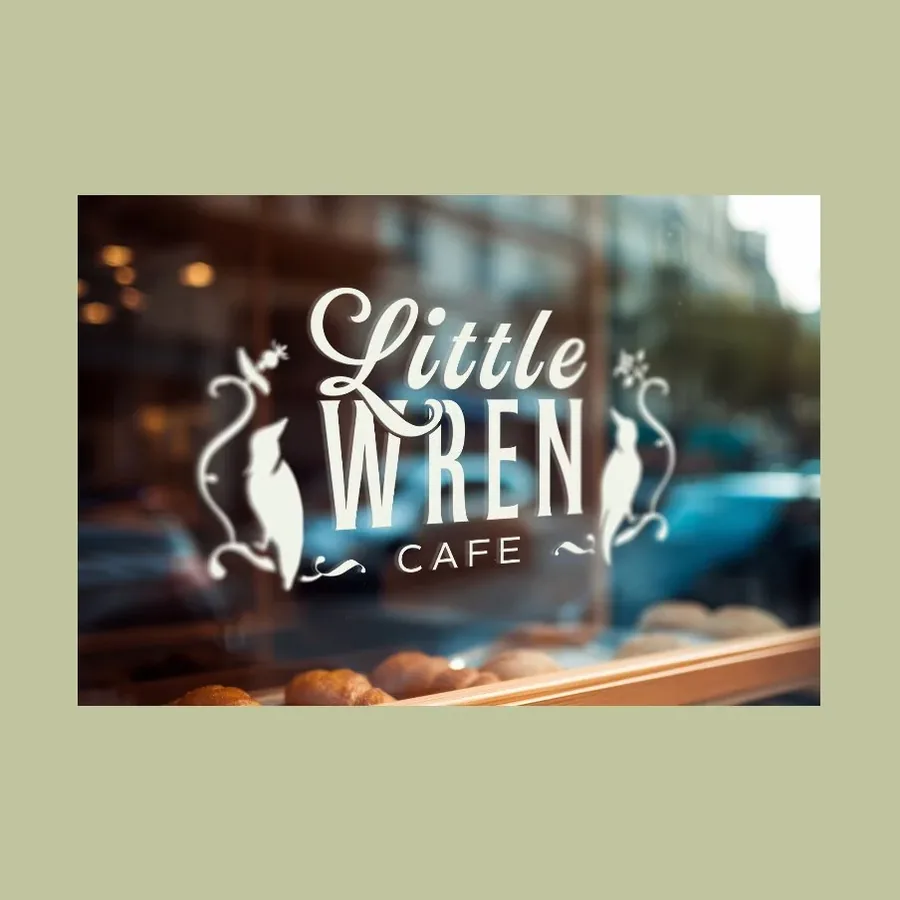
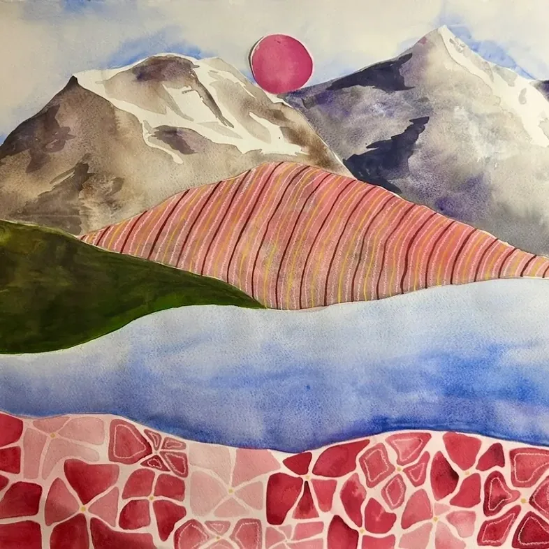

Selected work
SCROLL ↓

MORE WORK



A LITTLE ABOUT ME
I'm a designer who loves making things for people.
I work across the whole stack of making — UX/UI, branding, product, and the occasional ceramic bowl. I bring a lot of energy to a team, I'm not afraid of a bad idea, and I care about craft in all its forms.
My background spans agency branding, entrepreneurial product work, and a fine-art practice, which is exactly the range I try to bring to every problem.
More about me →